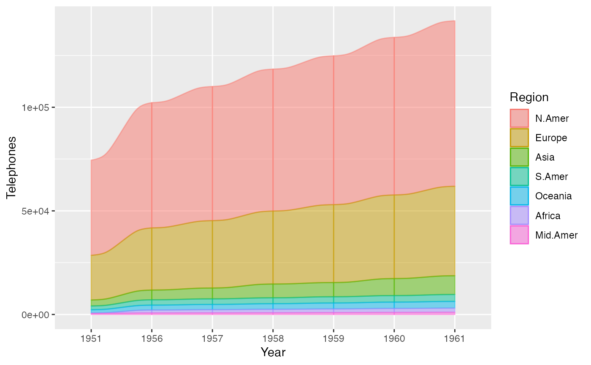
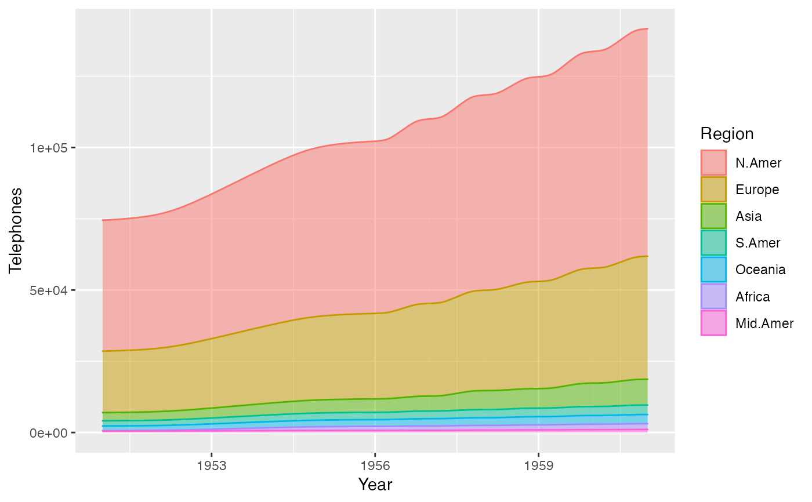

Flows between lodes or strata
geom_flow.Rdgeom_flow receives a dataset of the horizontal (x) and
vertical (y, ymin, ymax) positions of the lodes
of an alluvial diagram, the intersections of the alluvia with the strata.
It reconfigures these into alluvial segments connecting pairs of
corresponding lodes in adjacent strata and plots filled x-splines between
each such pair, using a provided knot position parameter knot.pos, and
filled rectangles at either end, using a provided width.
geom_flow(mapping = NULL, data = NULL, stat = "flow", position = "identity", width = 1/3, knot.pos = 1/6, aes.flow = "forward", na.rm = FALSE, show.legend = NA, inherit.aes = TRUE, ...)
Arguments
| mapping | Set of aesthetic mappings created by |
|---|---|
| data | The data to be displayed in this layer. There are three options: If A A |
| stat | The statistical transformation to use on the data; override the default. |
| position | Position adjustment, either as a string, or the result of a call to a position adjustment function. |
| width | Numeric; the width of each stratum, as a proportion of the distance between axes. Defaults to 1/3. |
| knot.pos | The horizontal distance between a stratum ( |
| aes.flow | Character; how inter-lode flows assume aesthetics from lodes. Options are "forward" and "backward". |
| na.rm | Logical:
if |
| show.legend | logical. Should this layer be included in the legends?
|
| inherit.aes | If |
| ... | Additional arguments passed to |
Aesthetics
geom_alluvium, geom_flow, geom_lode, and geom_stratum understand the
following aesthetics (required aesthetics are in bold):
xyyminymaxalphacolourfilllinetypesizegroup
group is used internally; arguments are ignored.
Defunct parameters
The previously deprecated parameters axis_width and ribbon_bend are now
defunct. Use width and knot.pos instead.
See also
ggplot2::layer() for additional arguments and
stat_alluvium() and
stat_flow() for the corresponding stats.
Other alluvial geom layers: geom_alluvium,
geom_lode, geom_stratum
Examples
# use of strata and labels ggplot(as.data.frame(Titanic), aes(y = Freq, axis1 = Class, axis2 = Sex, axis3 = Age)) + geom_flow() + scale_x_discrete(limits = c("Class", "Sex", "Age")) + geom_stratum() + geom_text(stat = "stratum", label.strata = TRUE) + ggtitle("Alluvial diagram of Titanic passenger demographic data")# use of facets ggplot(as.data.frame(Titanic), aes(y = Freq, axis1 = Class, axis2 = Sex)) + geom_flow(aes(fill = Age), width = .4) + geom_stratum(width = .4) + geom_text(stat = "stratum", label.strata = TRUE, size = 3) + scale_x_discrete(limits = c("Class", "Sex")) + facet_wrap(~ Survived, scales = "fixed")# time series alluvia of WorldPhones data wph <- as.data.frame(as.table(WorldPhones)) names(wph) <- c("Year", "Region", "Telephones") ggplot(wph, aes(x = Year, alluvium = Region, y = Telephones)) + geom_flow(aes(fill = Region, colour = Region), width = 0)# rightward flow aesthetics for vaccine survey data data(vaccinations) levels(vaccinations$response) <- rev(levels(vaccinations$response)) ggplot(vaccinations, aes(x = survey, stratum = response, alluvium = subject, y = freq, fill = response, label = round(a, 3))) + geom_lode() + geom_flow() + geom_stratum(alpha = 0) + geom_text(stat = "stratum")